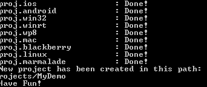
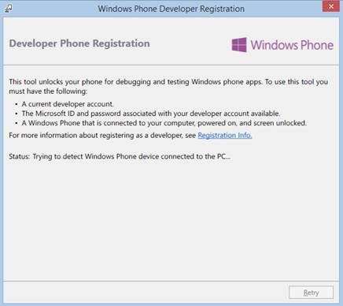

Overview
Cocos2d-x 可能是目前最流行的2D手机游戏引擎，它是开源的 Cocos2d-iphone项目的C++版本；支持多平台，包括iOS、Android、Windows Phone8、BlackBerry等，并还在不断更新和发展中；
WP8是微软公司最新一代的手机操作系统，由于采用和Win8相同的NT内核并拥有多项有别于iOS、Android的优点，使得它发展迅速。目前已拥有超过17万个应用，并且数量还在不断增加中。现在看来越来越多的开发者包括游戏开发者正向WP8平台迁移，想在这个平台上一显身手。
所以采用cocos2d-x引擎开发WP8手机游戏是一件顺理成章的事。鉴于这种趋势，笔者提供这个示例。希望通过本示例，能让各位学习到如何在WP8平台上搭建cocos2d-x的游戏开发环境，并预先告知搭建平台可能会遇到的一些问题及其解决办法。握起你手中的windows phone，我们开始吧！
使自己能够开发Windows phone
注册成为windows phone的开发者
访问以下MSDN的windows phone 开发用户注册页
http://msdn.microsoft.com/en-us/library/windowsphone/help/jj206719(v=vs.105)
http://msdn.microsoft.com/zh-cn/library/windowsphone/help/jj206719(v=vs.105)
按步骤填写windows账号和注册Windows phone开发者账号
Windows 账号说明：就是Hotmail、SkyDrive、Xbox LIVE的用户
开发者账号的费用：$19一年；学生账号免费但不能发布收费应用
安装编译环境
安装visual studio 2003
安装windows phone SDK 8.0
http://dev.windowsphone.com/en-US/downloadsdk
http://dev.windowsphone.com/zh-cn/downloadsdk
cocos2d-x项目的创建
获取最新的cocos2d-x的代码（本文以2.2版本为例）
从官网下载最新代码：http://www.cocos2d-x.org/download
把下载的zip包解压后就是cocos2d-x的整个工程：
整个工程的各个目录大致包含如下内容：
|
cocos2dx |
核心代码 |
|
cocosDenshion |
封装了声音引擎的代码（SimpleAudioEngine、OpenAL） |
|
extensions |
扩展库代码 |
|
external |
包含了很多外部库代码（Box2D、chipmunk等） |
|
sample |
4个示例代码： |
|
template |
跨平台模板代码 |
|
tools |
各种工具脚本 |
创建自己的cocos2d-x的HelloWorld：
下载并安装Python，注意不要安装3.0版本以上的【Tip1】
http://www.python.org/download/
设置电脑的环境变量，加入Python的安装路径：
我的电脑→右键→属性→高级→环境变量→系统变量→path→加入你的python安装目录
进入cmd，在任意目录下，输入python，不会提示“不是外部或内部命令”就OK。
创建HelloWorld工程：
Python create_project.py project
#PROJECT_NAME –package #PACKAGE_NAME –language #PROGRAMING_LANGUAGE进入cocos2d-x-2.2.0\tools\project-creator目录，在cmd下执行：
Note：上面的脚本中有三个变量需要根据自己的情况替换
#PROJECT_NAME ：工程的名称
#PACKAGE_NAME：包名称（格式：com.mycompany.mygame）
#PROGRAMING_LANGUAGE：编程语言（cpp, lua, javascript）如果看到如下界面，表示工程创建成功，恭喜！

把HelloWorld从cocos2d-x的大工程中独立出来：
刚才的HelloWorld在cocos2d-x-2.2.0\projects\目录下，可以根据自己的情况新建一个目录，把HelloWorld代码和cocos2d-x必要的文件拷贝过去，做一个干净的工程，注意目录结构不能破坏。做好的工程大致如下所示：
进一步简化工程创建的步骤
笔者建议开发者可以自己写一个bat文件，把创建和工程独立合二为一，做到一步完成。这里给出一个bat的例子供大家参考【TIP2】：
@echo off
set /p directoryName=Please Input Directory Name:
if "%directoryName%"=="" goto inputError
set /p projectName=Please Input Project Name:
if "%projectName%"=="" goto inputError
set /p packageName=Please Input Package Name:
if "%packageName%"=="" goto inputError
create_project.py -project %projectName% -package %packageName% -language cpp
xcopy ..\..\projects\%projectName% d:\%directoryName%\projects\%projectName% /s/e/i/y
xcopy ..\..\cocos2dx d:\%directoryName%\cocos2dx /s/e/i/y
xcopy ..\..\cocosDenshion d:\%directoryName%\cocosDenshion /s/e/i/y
xcopy ..\..\extensions d:\%directoryName%\extensions /s/e/i/y
xcopy ..\..\external d:\%directoryName%\external /s/e/i/y
@echo Create Project OK!
pause
goto finish
:inputError
@echo Need Directory & Project & Package Name!
pause
:finish按上述方法，创建工程(MyDemo)，观察一下工程的目录结构
硬盘上的目录结构见下左图
点击proj.wp8目录下的.sln文件，打开WP8的工程
目录结构见下右图
通过观察，我们可以得出几点结论：
以Proj.开头的目录存放的是和各个平台相关的代码和工程文件还有资源(比如Splash)
Class目录存放的是和平台无关的代码即用cocos2d-x写的游戏代码部分(AppDelegate, HelloWorldScene.cpp)。大家开发游戏的时候也应该把代码放在此目录下。
IFrameworkView^ Direct3DApplicationSource::CreateView()
{
return ref new MyDemo();
}
[Platform::MTAThread]
int main(Platform::Array^)
{
auto direct3DApplicationSource = ref new Direct3DApplicationSource();
CoreApplication::Run(direct3DApplicationSource);
return 0;
}
ref class MyDemo sealed : public Windows::ApplicationModel::Core::IFrameworkView
{
public:
MyDemo();
….
private:
// The AppDelegate for the Cocos2D app
AppDelegate app;
}; 通过如下代码可以了解引擎是如何把AppDelegate加到WP项目中去的
跨平台特性的体现：
AppDelegate.cpp, HelloWorldScene.cpp等代码在任何平台的工程里都是一样的
Resources目录存放的是游戏资源，各个平台都是统一的一份
扩充HelloWorld工程
查看工程目录可以看到，引擎只给我们导入了基本的库(libcocos2d)，而比如声音库CocosDenshion，物理库Box2D等并没有导入，所以我们需要手动将这些库导入。笔者以导入CocosDenshion为例，介绍如何加入这些库。具体步骤如下：
添加库项目到工程里：选中解决方案 右键，选择 “现有项目”
选择 cocos2d-x-2.2\CocosDenshion\proj.wp8目录下的 .vcxproj文件，加入工程
增加项目依赖：选中解决方案右键，选择“项目依赖项”
勾选我们刚才添加的库，记得esUtil_phone也勾选
添加引用：选中项目名(MyDemo)右键，选择“属性”，在“框架和引用”里面 点击 “添加新引用”，勾选新添加的库
为了更方便使用添加的库，最好增加新库的包含路径【Tip3】：
选中项目名(MyDemo)右键，选择“属性”，在“C/C++通用”里面，选择“附加包含目录”，增添新路径( $(ProjectDir)..\..\..\CocosDenshion\include )
至此HelloWorld工程正式建立起来了。
按下图所示设置VS的调试选项，编译并运行。
哇，出现了模拟器画面，恭喜啊，成功了！
ASSETS详解
认识XAP文件和Assets
看一下上述工程编译成功后的输出（中间省略了一些输出）
XAP文件就是windows phone的包文件格式，相当于Android的APK和iOS的APP。它是一个标准的zip压缩文件，包括了WP应用程序所需的一切文件，如程序集、资源文件等。通过项目的“输出路径”，我们可以找到生成的XAP的文件。
我们试着把XAP文件的后缀改为zip，然后解压，看一下里面包含的内容：

左图是XAP文件包含的内容，看上去和Android有点类似，包括程序文件(exe)、应用配置文件WMAppManifest.xml（类似于安卓的AndroidManifest.xml）、一些dll和一个Assets目录。中图是Assets目录、右图是Assets/Resources目录包含的内容，可以看到主要是游戏资源。
由此可见，和Android一样，WP的程序会把需要用到的资源放在Assets目录下。
进一步认识Assets目录（本节内容可以跳过）
利用cocos2d-x的跨平台特性，我们可以做一个实验
分别编译并运行MyDemo的proj.win32和proj.wp8工程，成功后分别出现如下画面
在整个工程的Resource目录下，找到HelloWorld.png图片，把这张图片的文件名改为
“Helloworld1.png”
打开HelloWorldScene.cpp，找到bool HelloWorld::init()函数做如下修改
// CCSprite* pSprite = CCSprite::create("HelloWorld.png");
CCSprite* pSprite = CCSprite::create("HelloWorld1.png");（此文件在两个工程内都被调用，只要在任一个工程修改，另一个工程内会自动更新）
分别编译并运行，出现如下画面
很明显，Win32成功了，WP8失败了。Debug一下就会知道pSprite的指针是空的。也就是没有拿到刚才已经改名的HelloWorld1.png这张图。为什么会这样呢？我们打开新生成的XAP文件看一下。结果发现XAP包里的Assets/Resources目录下还是原来那张HelloWorld.png的贴图，根本没有HelloWorld1.png的贴图。所以仅仅修改代码和工程的Resources目录下的资源，是无法影响XAP包里的资源的，正确方法请看第3点。
（win32工程不会错误的原因请读者自己研究）
学习如何把资源加入到Assets目录中
我们打开MyDemo的WP8工程，在VS的Solution Explorer下可以发现有Assets目录，见下图，这个目录下存放的就是打入XAP包里Assets目录下的所有资源
选择Assets下任意一张png图片，我们查看一下它所在的硬盘位置
怎么样，吃惊了吧。这个资源并不在我们之前一直提到的工程的Resources目录里。看不清的读者，可以看下图。
工程的Resources目录：(HelloWorld1.png是经过第2点实验后改过名的图片)
WP8工程里的Assets/Resources目录：
(原来的HelloWorld.png和改过名的HelloWorld1.png都在)
把”MyDemo/Resources” 目录定义为A目录，
把”MyDemo/proj.wp8/Assets/Resources”目录定义为B目录。
我们得出如下结论：
VS里面引用的都是B目录下的资源，即真正打入到XAP包的是B目录下的资源；
VS编译时会把A目录下的资源拷贝到B目录下；只会增加、覆盖，不会删除；
为了证实有拷贝这个过程，再次仔细查看编译后的输出，发现有如下提示
（读者也可以在A目录下增加一个文件，然后编译工程，去查看B目录）
阶段小结
根据以上结论，我们可以用如下顺序来处理资源【Tip4】：
清空B目录
在A目录下增加、删除、修改资源
打开并编译工程，确保A拷贝到B
在打开工程的Assets下引用B目录的资源，并做修改
（如果引用A目录下的资源情况会是怎样呢？读者可以自己去测试一下）
再次编译并生成XAP
我们用上述方法，请读者试着增加HelloWorld1.png、删除HelloWorld.png，并创建加入一个文本文件1.txt。成功后VS工程的Assets内容和XAP/Assets/Resources内容应如下所示：
最后一步
我们再创建一个文本文件1.txt，把它改名为1.123，然后按照上面的步骤，最后引入到Assets下。编译后，查看一下XAP文件，看看1.123有没有。
结果如上所示，虽然我们放入了1.123，但是却没有打入XAP/Assets/Resources/。
这是因为引入到Assets目录下的资源，VS只将认识的资源类型，默认打包进XAP。如果不是的话，则不会打进XAP。这个可以设置，设置方法：对资源右击，选择属性
“内容”这个属性选择 ：是
编译后，查看一下XAP文件，1.123果然有了。
恭喜，相信你已经完全了解Assets了！
推荐一些常用的游戏资源转换工具
利用TexturePacker软件来组合、整理图片【Tip5】
http://www.codeandweb.com/texturepacker
利用格式工厂等软件转换声音文件
利用plistEditor等软件在win8系统上编辑plist文件
导入游戏
有了以上知识的铺垫，读者应该可以真正用cocos2d-x的语句来编写游戏代码了。关于如何用cocos2d-x开发游戏，请参考官网介绍，此处笔者不做详细展开：
作为试验，在上述已经搭好的环境下，笔者参考下面的网址，把里面的cocos2d-x的代码直接拿到了MyDemo工程里，非常方便：
http://www.raywenderlich.com/33752/cocos2d-x-tutorial-for-ios-and-android-space-game
这是完成的游戏界面，很酷吧。
在WindowsPhone手机上运行游戏
目前为止我们都是在模拟器上运行游戏，如何在真机上运行呢？很简单。
使用Windows Phone SDK自带的注册工具，注册手机

详细步骤请参考MSDN上的介绍：
http://msdn.microsoft.com/library/windowsphone/develop/ff769508(v=vs.105).aspx
把WP手机用USB线连接到电脑，按下图所示设置VS的调试选项进行真机调试
使用Windows Phone SDK自带的部署工具，部署XAP到手机
详细步骤请参考MSDN上的介绍：
http://msdn.microsoft.com/zh-cn/library/windowsphone/develop/ff928362(v=vs.105).aspx
结束语
笔者希望通过这篇文章，能让各位读者以最快的速度熟悉在Windows Phone上使用cocos2d-x。当然由于篇幅和时间有限，这篇文章还有很多不足之处。欢迎各位技术大牛指摘。当然更希望这篇文章能起到一个抛砖引玉的作用，希望大家都来开发Windows Phone游戏，成为游戏发展的弄潮儿，谢谢！
微软中国有限公司 开发工具及平台事业部
开发技术顾问
梅颖广
yimei@microsoft.com